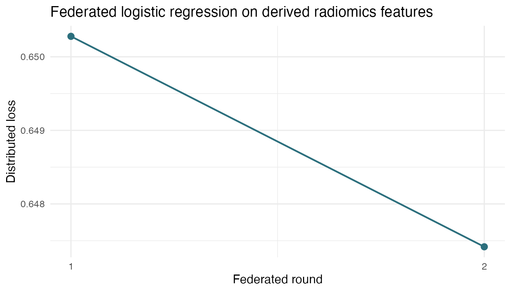

Radiomics To Federated Learning
radiomics-to-flower.RmdThis vignette shows the handoff between dsImaging and
dsFlowerClient: images stay in the imaging store or bucket,
dsImaging derives a radiomics feature asset from CT images
and masks, and dsFlowerClient trains a federated model from
the derived server-side feature table.
The default pkgdown build does not launch Opal jobs. Set
DSFLOWER_RUN_RADFLOWER_VIGNETTE=true to run the live
workflow while rendering.
Workflow
The upstream extraction is owned by dsImaging. The
example below uses the public LUNG1/NSCLC-Radiomics CT cohort with
existing RTSTRUCT GTV-1 tumour masks and the Aerts
signature profile.
library(dsImagingClient)
ds.imaging.init(conns, resource = "dsdemo.lung1_full_study", symbol = "img")
radiomics <- ds.imaging.radiomics.process_collection(
conns,
dataset_id = NULL,
segmenter = ds.imaging.segmenter.existing_mask("masks"),
profile = ds.imaging.radiomics.profile.aerts_signature(),
batch_size = 1L,
allow_partial = FALSE,
visibility = "global"
)When the radiomics collection is published, each server exposes a
derived asset. Load those assets into a server-side table named
rad before training. ds.imaging.init() must
run first because the asset loader resolves dataset metadata from the
imaging resource context.
radiomics <- readRDS("/tmp/dsimaging_lung1_full/datashield_radiomics_result.rds")
for (srv in names(radiomics)) {
ds.imaging.radiomics.load_features(
conns[srv],
dataset_id = radiomics[[srv]]$dataset_id,
asset_id = radiomics[[srv]]$asset_id,
symbol = "rad",
include_metadata = TRUE,
syntactic_names = TRUE
)
}The downstream model uses the high-level ds.flower.fit()
syntax. dsFlower stages only the target and selected
feature columns on each server, drops rows with missing or non-finite
target/feature values before training, and fails early if the resulting
training table violates the active trust profile.
library(dsFlowerClient)
features <- c(
"original_firstorder_Energy",
"original_shape_Compactness1",
"original_glrlm_RunLengthNonUniformity",
"wavelet.HLH_glrlm_RunLengthNonUniformity",
"age",
"gender_male"
)
fit <- ds.flower.fit(
conns,
symbol = "rad",
target = "os_2yr_alive",
features = features,
model = "sklearn_logreg",
model_params = list(max_iter = 100L),
strategy = "fedavg",
privacy = "trusted_internal",
rounds = 2L
)Runnable Script
The package ships a script that runs the full downstream step from published radiomics assets:
export DSFLOWER_OPAL_URLS="https://localhost:8443,https://localhost:8444,https://localhost:8445"
export OPAL_USER="administrator"
export OPAL_PASSWORD="admin123"
export LUNG1_WORKDIR="/tmp/dsimaging_lung1_full"
export LUNG1_OPAL_RESOURCE="lung1_full_study"
Rscript inst/demos/lung1_radiomics_to_flower.R
demo_file <- system.file("demos", "lung1_radiomics_to_flower.R",
package = "dsFlowerClient")
if (!nzchar(demo_file)) {
demo_file <- file.path("..", "inst", "demos",
"lung1_radiomics_to_flower.R")
}
source(demo_file)Validated Run
Validation run on 2026-05-10 against three local Opal/Rock nodes:
validation <- data.frame(
metric = c("opal1 rows", "opal2 rows", "opal3 rows", "combined rows",
"columns loaded", "selected features", "rounds",
"round 1 loss", "round 2 loss", "client failures",
"global coef shape"),
value = c("142", "143", "137", "422", "20", "6", "2",
"0.6502785", "0.6474173", "0", "1 x 6")
)
knitr::kable(validation)| metric | value |
|---|---|
| opal1 rows | 142 |
| opal2 rows | 143 |
| opal3 rows | 137 |
| combined rows | 422 |
| columns loaded | 20 |
| selected features | 6 |
| rounds | 2 |
| round 1 loss | 0.6502785 |
| round 2 loss | 0.6474173 |
| client failures | 0 |
| global coef shape | 1 x 6 |
loss <- data.frame(
round = c(1L, 2L),
loss = c(0.6502785, 0.6474173),
n_clients = c(3L, 3L),
n_failures = c(0L, 0L)
)
if (has_ggplot2) {
ggplot2::ggplot(loss, ggplot2::aes(x = round, y = loss)) +
ggplot2::geom_line(color = "#2c6f7d", linewidth = 0.8) +
ggplot2::geom_point(color = "#2c6f7d", size = 2.6) +
ggplot2::scale_x_continuous(breaks = loss$round) +
ggplot2::labs(
x = "Federated round",
y = "Distributed loss",
title = "Federated logistic regression on derived radiomics features"
) +
ggplot2::theme_minimal(base_size = 12)
} else {
plot(loss$round, loss$loss, type = "b",
xlab = "Federated round", ylab = "Distributed loss",
main = "Radiomics to dsFlower loss")
}
The validated run produced a global scikit-learn logistic-regression
model with two parameter arrays: coef (1 x 6)
and intercept (1). All three clients
participated in both rounds and Flower reported zero client
failures.